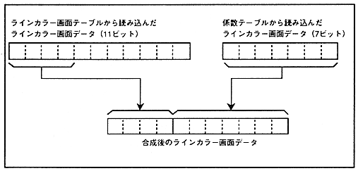

Figure 6.6 Line color screen data using coefficient data

When the rotation parameter mode is specified as mode 0, the line color screen using the coefficient table of rotation parameter A is used. When mode 1 is specified, the line color screen based on the rotation parameter B coefficient table is used. When mode 2 is specified, the line color screen using the coefficient table of the rotation parameter A is used for both the rotation parameter A picture and the rotation parameter B picture. When mode 3 is specified, the line color screen using the rotation parameter A coefficient table is used for the picture using the rotation parameter A, and the line color screen using the rotation parameter B coefficient table is used for the picture using the rotation parameter B. . When RBG1 is displayed, the line color screen using the coefficient table of the rotation parameter A is used for both RBG0 and RBG1.
Please refer to “ 7.1 Line color screen ” for details of the line color screen.